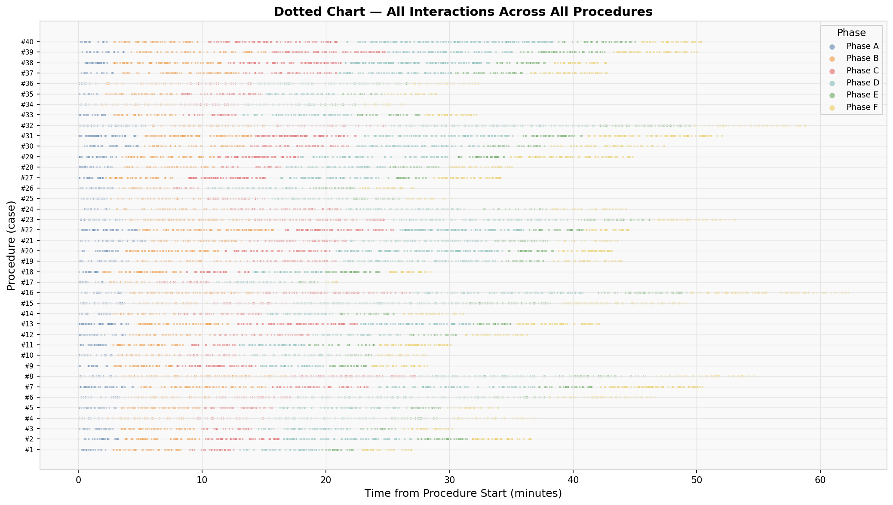
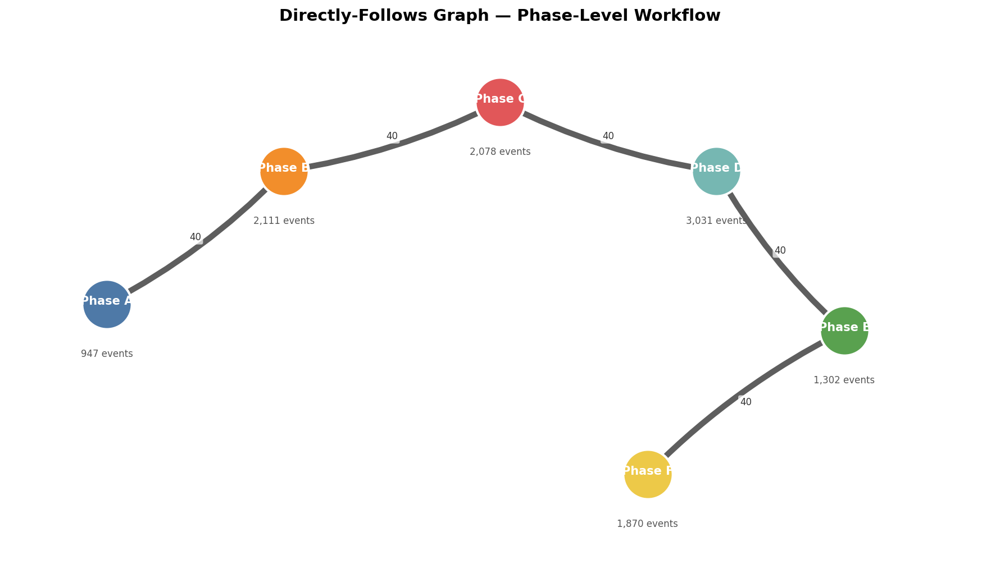
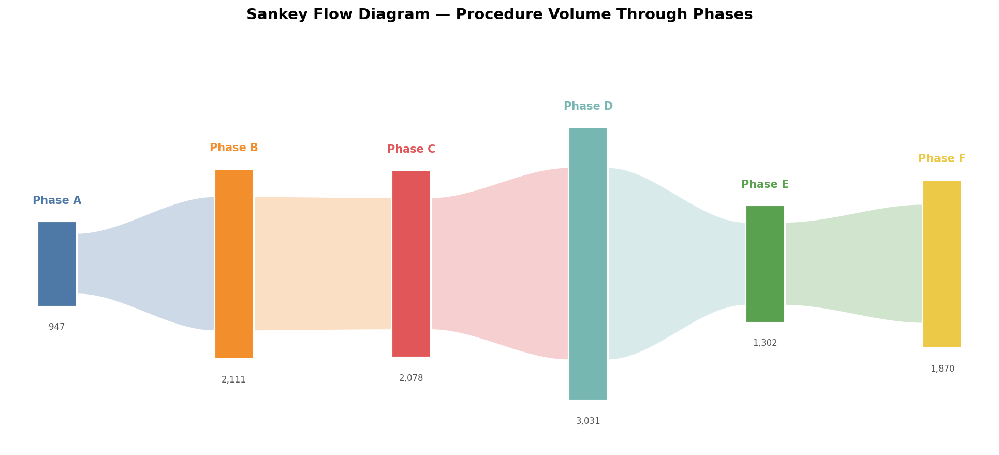
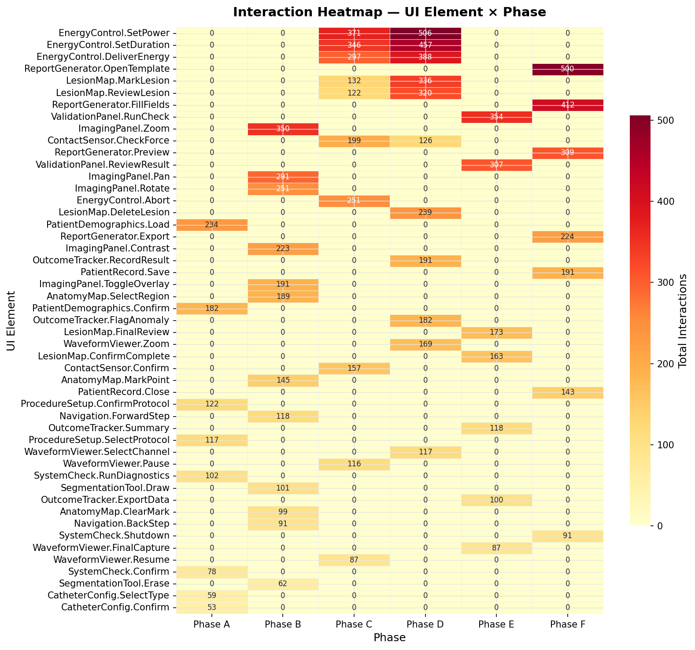
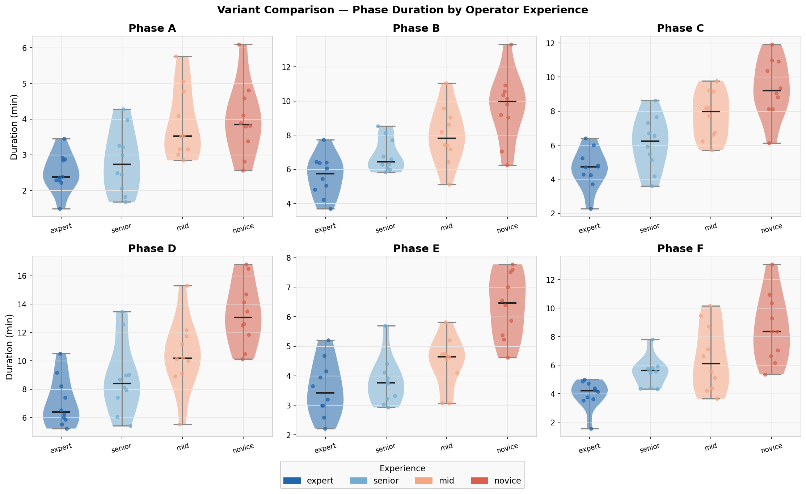
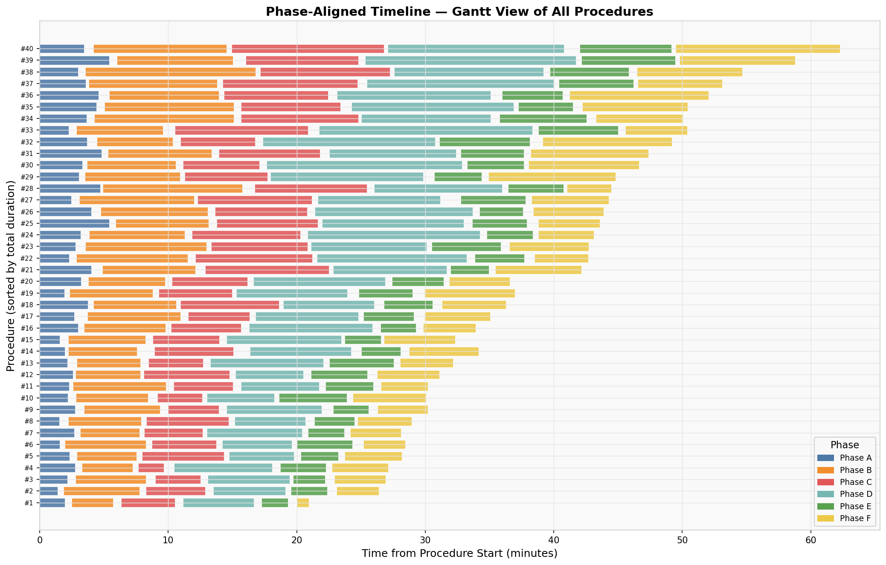
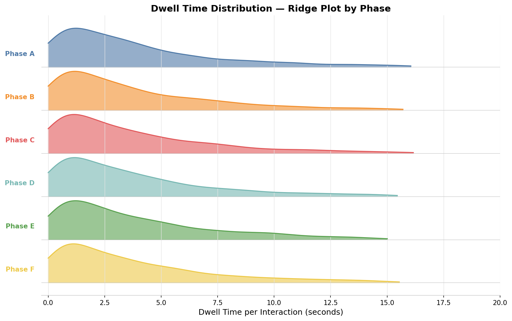
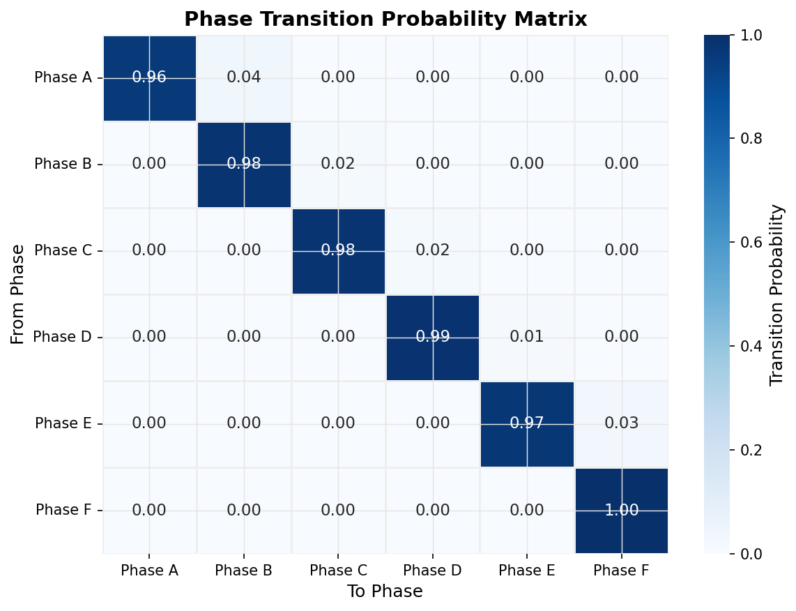

Visualization Gallery
Each visualization type below answers a fundamentally different analytical question about workflow behaviour. Some reveal the structure of a process; others expose timing patterns, operator variability, or individual UI element engagement. Select any card — or use the tabs above — to explore each view in detail.

Dotted Chart
Every interaction plotted as a coloured dot — phase on colour, procedure on Y-axis, time on X-axis. The complete temporal fingerprint of the entire dataset.

Directly-Follows Graph
Node-arc process model showing how phases follow each other. The canonical output of process mining. Arc weight encodes transition frequency.

Sankey Flow Diagram
Proportional flow bands carry interaction volume through phases. Immediately shows where operator effort is concentrated across the workflow.

Interaction Heatmap
Cross-tabulation of UI elements versus phases. Cell intensity encodes total interaction count, pinpointing dominant screen–phase pairings.

Variant Comparison
Violin + strip plots comparing phase durations across experience groups. Key for benchmarking and identifying which phases benefit most from training.

Phase-Aligned Timeline
Gantt view aligning every procedure to a common origin. Surfaces outliers, abnormally long phases, and systematic bottlenecks at a glance.

Dwell Time Distribution
Ridge-density plot of per-interaction engagement time by phase. Long right tails signal cognitive hesitation or UI friction at specific workflow stages.

Transition Matrix
Markov-style probability matrix of phase-to-phase transitions. Quantifies workflow regularity and identifies deviations from the intended protocol sequence.
Dotted Chart
Every individual UI interaction is plotted as a coloured dot — phase determines dot colour, each row is one procedure, and the X-axis is elapsed time. The result is a complete temporal "fingerprint" of the entire dataset, making rhythm, density, and phase structure visible at a glance across all 40 procedures simultaneously.
How to read: Each row is a single procedure. Dots are coloured by phase. Horizontal spread reflects elapsed time from procedure start; vertical density within a row reflects interaction rate. Dense columns signal high-activity bursts; sparse regions indicate low-engagement or waiting states. Procedure rows are stacked vertically, so cross-row patterns reveal population-level consistency.
Questions Answered
- How does total procedure duration vary across cases?
- Are phase boundaries consistent across different operators?
- Are there procedures with unusual activity gaps or interaction bursts?
- Does interaction density meaningfully differ between phases?
- Which individual cases are outliers in duration or activity profile?
- Is workflow rhythm stable across the study period?
Insights Revealed
- Phases B and D consistently produce the widest horizontal spans — the primary time drivers.
- Some procedures show compressed Phase C timing — possible efficiency gains or step skipping.
- Novice operators display denser dot clusters, indicating more micro-interactions per phase.
- Horizontal gaps between phase colour bands are identifiable — potential UI idle states at transitions.
- Overall procedure "shape" is highly consistent across the cohort, validating workflow regularity.
- A small cluster of outlier cases extends well beyond the median total duration.
Directly-Follows Graph (DFG)
The canonical output of process mining algorithms. Nodes represent process states (phases or UI screens); weighted directed arcs represent observed transitions between them. Arc thickness and frequency labels encode how often each transition occurred across all 40 procedures, immediately revealing the dominant workflow path and any rework loops.
Phase view: Nodes sized by event volume. Blue solid arcs = forward protocol flow. Red dashed arcs = observed back-edges (rework / re-entry). Arc width and ×N label encode transition frequency. Click any node to expand its internal UI element graph.
Questions Answered
- What is the dominant workflow path through the procedure?
- How often do operators revisit a previous phase?
- Are there "shortcut" transitions between non-adjacent phases?
- Which phase is most frequently re-entered?
- Does observed behaviour conform to the intended protocol sequence?
Insights Revealed
- The dominant path is strictly linear A→B→C→D→E→F, confirming strong protocol adherence.
- Backward arcs from D→C suggest occasional re-checking during the core workflow phase.
- Phase B has the highest inbound transition count — operators re-enter this phase frequently.
- Phase F (closeout) has the fewest back-transitions, indicating minimal rework at wrap-up.
- Rare direct jumps B→D may indicate experienced operators skipping preparatory steps.
Sankey Flow Diagram
Proportional flow bands carry procedure interaction volume through each sequential phase. Band width is proportional to the number of UI interactions, making effort concentration immediately visible. At a glance you can see which phases are "heavy" versus which serve as brief transitions — a critical view for workflow load-balancing and UI complexity assessment.
How to read: Each vertical bar is a phase node — bar height encodes total interaction volume. The curved S-shaped band connecting two adjacent phases carries the volume flowing between them; wider bands mean more interactions. Click any phase bar to drill into its within-phase UI element transitions. Numbers below each node are raw aggregate interaction counts.
Questions Answered
- Which phase consumes the most operator interaction effort?
- How does interaction volume evolve across the procedure lifecycle?
- Where does the procedure "thin out" in terms of interaction activity?
- Is effort distribution consistent with the designed procedural intent?
- Which phase-to-phase transitions carry the most cognitive throughput?
Insights Revealed
- Phase D carries the largest interaction volume — the heaviest operator cognitive load point.
- Flow narrows noticeably at Phases E and F, reflecting the wind-down nature of validation and closeout.
- Phase A has a consistently thin band — setup is rapid and well-standardised.
- The Phase C→D transition is the highest-volume handoff — a critical point for error risk.
- Overall volume follows a bell-shaped profile peaking at Phase D, then tapering to closeout.
Interaction Heatmap
A cross-tabulation matrix where rows are individual UI elements and columns are procedural phases. Cell colour intensity encodes the total interaction count. This view makes it immediately clear which UI controls dominate each phase and flags any unexpected usage patterns — elements appearing in phases where they weren't designed to be primary.
How to read: Darker cells = higher interaction frequency. Each cell number is the raw count summed across all 40 procedures. Rows are sorted by total interaction volume (highest at top). Phase columns are in procedural order left to right. Scan vertically to understand a phase's UI composition; scan horizontally to understand an element's usage across the workflow.
Questions Answered
- Which UI elements are used most intensively in each phase?
- Are any controls used unexpectedly across multiple phases?
- Do any UI elements appear underused relative to their designed role?
- Where are interaction hotspots that may warrant usability review?
- Which screens dominate operator attention during each phase?
- Is there evidence of UI "carry-over" — elements used in phases beyond their designed scope?
Insights Revealed
- The two highest-intensity elements are concentrated in Phases C and D — matching the peak activity region.
- Imaging-related controls show significant use in Phase B but spill into Phase C — contextual carry-over.
- One monitoring element shows surprisingly broad phase coverage — acting as a passive reference panel.
- Closeout-related screens are tightly constrained to Phase F only — well-partitioned workflow design.
- System check elements appear at both Phase A and Phase F, bookending the procedure as expected.
Variant Comparison — Experience Level
Violin plots reveal the full distribution shape of phase duration for each operator experience group (expert, senior, mid-level, novice). Strip overlays show individual procedure data points. This is the core view for understanding where training and UI design have the most impact on performance variability.
How to read: Each subplot is one phase. Violin width at a given Y-value reflects the density of procedures at that duration — wider = more procedures clustered there. The horizontal bar inside each violin is the median. Strip dots show individual procedure instances. Groups are ordered expert → senior → mid → novice left to right within each subplot.
Questions Answered
- Does operator experience significantly affect phase duration?
- Which phases show the greatest inter-operator variability?
- Are novice operators consistently slower, or only in specific phases?
- Do expert operators ever take longer than novices on any phase?
- Which phases benefit most from targeted UI or training improvements?
- Are there multimodal distributions suggesting distinct operator strategies?
Insights Revealed
- Expert operators are consistently faster across all phases, with the largest gap in Phase D.
- Phase B shows the widest spread at all experience levels — an inherently variable task for everyone.
- Novice operators display bimodal distributions in Phase C, suggesting two distinct interaction strategies.
- Phase A durations converge across all experience groups — well-structured UI reduces variability.
- Phase F has the lowest overall variability regardless of experience — a highly standardised closeout workflow.
Phase-Aligned Timeline
All 40 procedures aligned to a common time origin — each row represents one procedure, sorted by total duration. Phase segments are rendered as coloured horizontal bars. This Gantt-style view makes procedural bottlenecks and outlier cases immediately apparent, without requiring any aggregation that would hide individual case variation.
How to read: Each row is one procedure, sorted shortest (top) to longest (bottom). Bar lengths represent individual phase duration; bar colours identify which phase. The horizontal extent of a row is total procedure time. Procedures near the bottom are candidates for root-cause analysis. Unusually long bars of a single colour within a row point to a specific phase as the bottleneck.
Questions Answered
- What is the typical total procedure duration and how wide is the range?
- Which procedures are outliers in total or individual phase duration?
- Which phase is the most variable contributor to total procedure time?
- Are there systematic differences between early and late procedures (learning curve)?
- Do any procedures show a single disproportionately extended phase segment?
Insights Revealed
- Phase D is consistently the longest bar — confirms it as the primary time driver across all procedures.
- Two procedures at the bottom show markedly extended Phase B durations — potential difficulty cases.
- The fastest procedures all show compact Phase C segments — a potential indicator of experienced operators.
- Phase A is visually near-uniform in length across all procedures — robust standardisation confirmed.
- Total procedure time spans roughly 2× from fastest to slowest — meaningful and addressable efficiency variance.
Dwell Time Distribution
Per-interaction engagement time (dwell) shown as overlapping kernel density curves, one per phase. The shape of each distribution reveals cognitive engagement patterns at the interaction level — sharp, leftmost peaks indicate rapid, decisive actions, while heavy right tails signal deliberation, hesitation, or UI friction at specific workflow stages.
How to read: Each coloured ridge is the density of dwell times for one phase. Peak position = most common dwell duration (X-axis, seconds). Wider or right-shifted peaks indicate longer typical dwells. Heavy right tails indicate occasional very long interactions. Curves are normalised in height for visual comparability — refer to the heatmap for absolute interaction counts by phase.
Questions Answered
- Are operators quickly scanning or deeply engaging with UI elements?
- Which phases have the longest average per-interaction dwell times?
- Do certain phases show heavy-tailed distributions indicating UI friction?
- Is there evidence of hesitation or cognitive overload in any phase?
- How does interaction tempo change across the procedure lifecycle?
- Which specific UI interactions are candidates for friction investigation?
Insights Revealed
- Phase D shows the heaviest right tail — operators linger longest on individual controls in the core workflow phase.
- Phases A and F have the sharpest, leftmost peaks — fast, decisive interactions confirming well-designed bookend flows.
- Phase B has a notably broad, flat distribution — tasks in this phase involve highly variable engagement patterns.
- All phases share a common short-dwell mode (~1–2 s) — a baseline "confirmation click" behaviour present throughout.
- Long dwell outliers (>15 s) concentrate predominantly in Phases C and D — prime candidates for UI friction investigation.
Phase Transition Probability Matrix
A Markov-style stochastic matrix where each cell (row → column) represents the empirically observed probability of transitioning from one phase to another. Near-diagonal dominance indicates a linear, protocol-adherent flow. Off-diagonal "hot" cells reveal rework loops, skipped steps, or adaptive navigation strategies — and can seed predictive phase recognition models.
How to read: Read each row as "given I am currently in phase X, what phase comes next?" Cell values are transition probabilities (0.00 – 1.00) that sum to 1.0 per row. Darker cells = higher probability. Near-diagonal dominance indicates a linear, predictable flow. Off-diagonal coloured cells are analytically important — they quantify non-standard transitions.
Questions Answered
- How deterministic is the workflow — does one phase reliably follow another?
- Which phase-to-phase transitions have the highest deviation probability?
- Are there measurable backward transitions that indicate rework loops?
- How closely does observed behaviour match the designed protocol sequence?
- Can a probabilistic model predict the next phase from the current state?
- Which phase is a reliable terminal state?
Insights Revealed
- Super-diagonal dominance (A→B, B→C…) confirms strong protocol adherence across the cohort.
- Phase D→C has a non-zero backward probability (~8%) — quantifying the re-check loop frequency.
- Phase B is the most "leaky" — moderate probability of transitioning to both C and back to A.
- Phase F has near-unity probability of being a terminal state — very few post-closeout navigations observed.
- The matrix can directly seed a Hidden Markov Model for automated phase recognition from raw event streams.